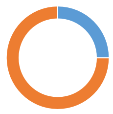
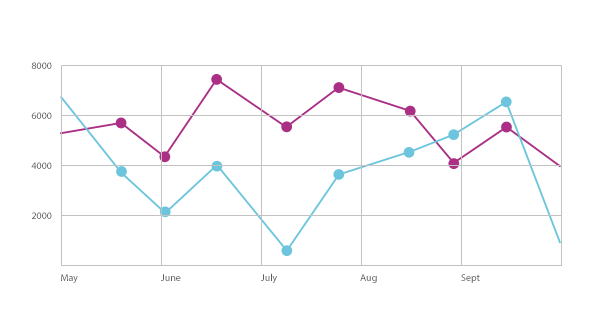

Vulnerability Summary by Org:
Steve Hull (Sr. Director)
Filtered by: S3 and higher | Updated: 06/25/2018
Filtered by: S3 and higher | Updated: 06/25/2018
5,432
Assets
Scanned
Scanned
1,986
Assets Not
Scanned
Scanned
36.56% scan coverage.
The total number of assets scanned by Qualys (agent or external)
in the last 60 days.
Having the Qualys agent installed on all assets is critical for
obtaining accurate vulnerability metrics.
1,450
Vulnerabilities
The total number of unique vulnerabilities found across scanned
assets.
2,010
Assests affected
The total number of assets found to have at least one
vulnerability.
2,490
Occurences
Total occurrences to be remediated. This number best reflects the
bottom line total surface area of security risk.
Vulnerability Distribution
Percentages below are calculated using total occurrences.

App: 60%
Infra: 40%
| App | Infra | |
| Vulnerabilities | 400 | 1100 |
| Assests Affected | 220 | 590 |
| Occurences | 730 | 470 |
App vs Infra
Vulnerabilities in application software (e.g. “Java”) vs.
infrastructure (e.g. “OS Kernel”)
App: 60%
Infra: 40%
| App | Infra | |
| Vulnerabilities | 400 | 1100 |
| Assests Affected | 220 | 590 |
| Occurences | 730 | 470 |
App vs Infra
Vulnerabilities in application software (e.g. “Java”) vs.
infrastructure (e.g. “OS Kernel”)
App: 60%
Infra: 40%
| App | Infra | |
| Vulnerabilities | 400 | 1100 |
| Assests Affected | 220 | 590 |
| Occurences | 730 | 470 |
App vs Infra
Vulnerabilities in application software (e.g. “Java”) vs.
infrastructure (e.g. “OS Kernel”)
Vulnerability Trend
The trend of remediation vs. newly discovered vulnerabilities.
Remediation velocity can be understood as a downward trend for
open issues. New issues can be understood as adding to the backlog
of remediation work that must be done.

Open
New
Total Assets
Assets Affected
Actions To Remediate
Prioritized list of actions to remediate vulnerabilities. Taking
the highest priority actions first will yield the largest
reduction of issues.
| OS Patching |
54% of issues will be fixed
|
|
| Software Update |
26% of issues will be fixed
|
|
| Software Configuration Change |
10% of issues will be fixed
|
|
| Remove/Replace EOL Software |
7% of issues will be fixed
|
|
| Stop Service/Remove Software |
2% of issues will be fixed
|
|
| Unclassified |
1% of issues will be fixed
|
Highest & Lowest Performers
Asset owners with the least and most issues to remediate.
View All Performers
| Highest | |
| Director | Occurrences |
| Jessica Gutierrez | 0 |
| Gerald Rodriguez | 0 |
| Lauren Hernandez | 30 |
| Ronald Cooper | 45 |
| Mark Smith | 47 |
| Lowest | |
| Director | Occurrences |
| Melissa Parker | 1,800 |
| Maria McDonald | 1,450 |
| Andrew Ortiz | 1,420 |
| Dylan Riley | 1,100 |
| Jerry Sandoval | 1,050 |